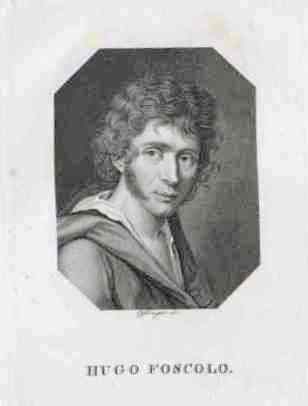
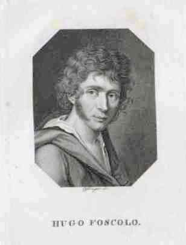

I primi anni: tra Zante e Venezia
La giovinezza di Ugo Foscolo è segnata da un profondo senso di sradicamento e da un'intensa formazione culturale che influenzeranno tutta la sua vita e la sua opera. Nato in una terra di confine, tra due culture, il giovane Foscolo sviluppò presto una sensibilità particolare e un forte desiderio di conoscenza.
ove il mio corpo fanciulletto giacque..."
— Ugo Foscolo, A Zacinto
La nascita a Zante
Niccolò Ugo Foscolo nacque il 6 febbraio 1778 a Zante (l'antica Zacinto), una delle isole Ionie, allora sotto il dominio della Repubblica di Venezia. Il padre, Andrea Foscolo, era un medico veneziano che si era trasferito nelle isole Ionie per lavoro. La madre, Diamantina Spathis, era di origine greca.
Questa duplice origine, veneziana e greca, influenzò profondamente la formazione culturale e l'identità di Foscolo. Da un lato, egli si sentì sempre legato alla cultura italiana, di cui divenne uno dei massimi esponenti; dall'altro, mantenne un forte legame emotivo con la Grecia, terra natale che celebrò nel sonetto "A Zacinto".
 

I primi anni di vita di Foscolo a Zante furono sereni, ma segnati da un evento doloroso: la morte del padre nel 1788, quando Ugo aveva solo dieci anni. Questo lutto precoce lasciò un segno profondo nell'animo del giovane e contribuì a formare quella visione pessimistica della vita che caratterizzerà la sua opera.
Il trasferimento a Venezia
Dopo la morte del padre, la famiglia Foscolo visse un periodo di difficoltà economiche. Nel 1792, la madre decise di trasferirsi con i figli a Venezia, città d'origine del padre. Ugo aveva quattordici anni e lasciava per sempre la sua isola natale, un distacco che avrebbe ricordato con nostalgia nel sonetto "A Zacinto".
A Venezia, Foscolo frequentò il seminario di Castello, dove ricevette una solida formazione classica. Studiò latino e greco, e si appassionò alla letteratura italiana, in particolare a Dante, Petrarca e Alfieri. Quest'ultimo, con il suo forte impegno civile e la sua critica alla tirannide, esercitò una profonda influenza sul giovane Foscolo.
Nonostante le difficoltà economiche, Foscolo si dedicò con passione agli studi, mostrando presto un talento straordinario per la poesia e una vasta cultura. Frequentò anche l'università di Padova, dove seguì le lezioni di Melchiorre Cesarotti, traduttore dei poemi di Ossian e figura importante nella cultura italiana dell'epoca.
Le prime opere e l'impegno politico
Gli anni veneziani furono fondamentali per la formazione culturale e politica di Foscolo. In questo periodo, il giovane poeta entrò in contatto con gli ambienti giacobini della città, aderendo con entusiasmo agli ideali rivoluzionari di libertà, uguaglianza e fraternità.
Nel 1797, a soli diciannove anni, Foscolo fece rappresentare al Teatro Sant'Angelo di Venezia la sua prima tragedia, "Tieste". L'opera, ispirata al modello alfieriano, conteneva una forte critica alla tirannide e ottenne un notevole successo. Nello stesso anno, Foscolo pubblicò l'"Oda a Bonaparte liberatore", in cui celebrava Napoleone come liberatore dell'Italia dal giogo austriaco.
1778
Nascita a Zante (Zacinto), isola ionica sotto il dominio della Repubblica di Venezia.
1788
Morte del padre, Andrea Foscolo, che lascia la famiglia in difficoltà economiche.
1792
Trasferimento a Venezia con la madre e i fratelli. Inizio degli studi al seminario di Castello.
1796-1797
Frequentazione degli ambienti giacobini veneziani e adesione agli ideali rivoluzionari.
1797
Rappresentazione della tragedia "Tieste" al Teatro Sant'Angelo di Venezia. Pubblicazione dell'"Oda a Bonaparte liberatore".
Ottobre 1797
Trattato di Campoformio: Napoleone cede Venezia all'Austria. Foscolo, deluso, lascia Venezia per Milano.
La delusione di Campoformio e la partenza da Venezia
Il 1797 fu un anno cruciale nella vita di Foscolo. In maggio, la Repubblica di Venezia cadde sotto i colpi dell'esercito napoleonico. Inizialmente, Foscolo accolse con entusiasmo questo evento, sperando che portasse alla nascita di una repubblica democratica. Ma le sue speranze furono presto deluse.
Il 17 ottobre 1797, con il Trattato di Campoformio, Napoleone cedette Venezia all'Austria, tradendo gli ideali rivoluzionari e le speranze dei patrioti veneziani. Per Foscolo, questo fu un colpo durissimo, che segnò l'inizio di quella disillusione politica che caratterizzerà tutta la sua vita.
Dopo Campoformio, Foscolo decise di lasciare Venezia per non vivere sotto il dominio austriaco. Si trasferì a Milano, capitale della Repubblica Cisalpina, dove iniziò una nuova fase della sua vita. La giovinezza era finita, ma l'esperienza di questi anni - il senso di sradicamento, la formazione classica, l'adesione agli ideali rivoluzionari, la delusione politica - avrebbe influenzato profondamente tutta la sua opera successiva.
L'eredità della giovinezza nell'opera di Foscolo
L'esperienza della giovinezza lasciò un'impronta indelebile nell'opera di Foscolo. Il senso di sradicamento, dovuto alla duplice origine e all'abbandono della terra natale, emerge con forza nel sonetto "A Zacinto", dove il poeta esprime la nostalgia per l'isola che non potrà più rivedere.
La formazione classica ricevuta a Venezia influenzò profondamente il suo stile e la sua concezione della letteratura. L'adesione agli ideali rivoluzionari e la successiva delusione per il tradimento di Campoformio sono alla base delle "Ultime lettere di Jacopo Ortis", romanzo in cui Foscolo proietta molte delle sue esperienze giovanili.
Anche la morte precoce del padre e le difficoltà economiche della famiglia contribuirono a formare quella visione pessimistica della vita che caratterizza molte sue opere. Allo stesso tempo, la ricchezza culturale dell'ambiente veneziano e l'incontro con figure come Cesarotti e Alfieri stimolarono il suo talento letterario e il suo impegno civile.
La giovinezza di Foscolo, con le sue luci e le sue ombre, rappresenta così non solo una fase biografica, ma un laboratorio di esperienze e di idee che alimenteranno tutta la sua produzione successiva, facendone uno dei più grandi poeti italiani tra Settecento e Ottocento.